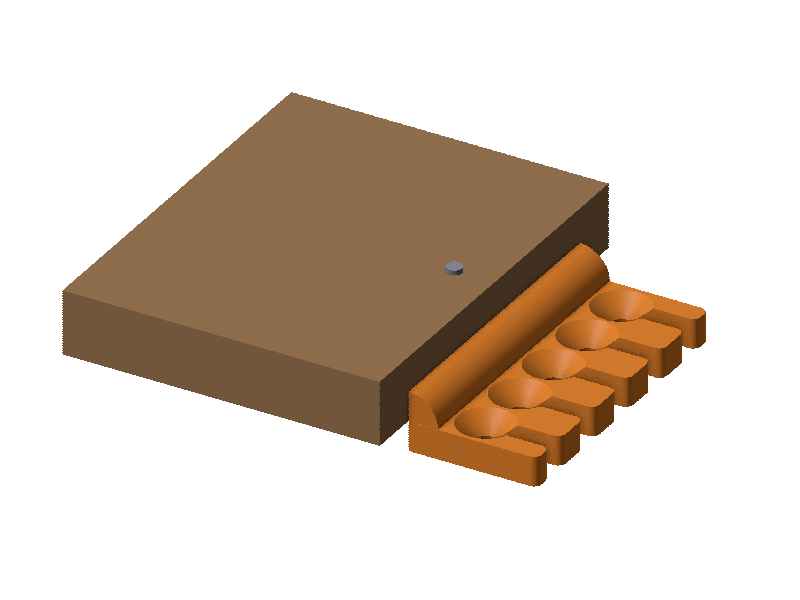
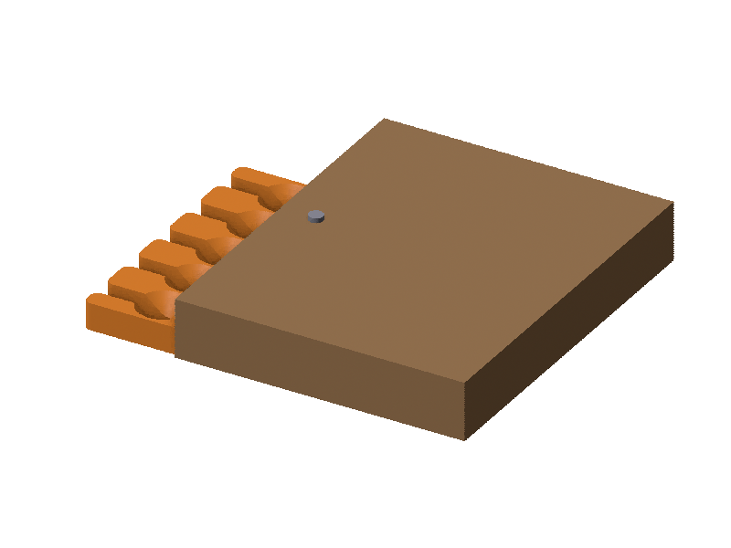

table-cable-hook
Drafted with AI, not yet reviewed
by Reiorganisation/hook-table-cables.scadPrintables
Cable tray for under a table’s edge, screwed to the underside, with slots that hold five cables.
draw_rgb shows the part in colour among its surroundings: the table and the screw are drawn only while PREVIEW is true, so set it to false before exporting.


Files
Source
// SPDX-License-Identifier: 0BSD // // Cable tray for under a table's edge, screwed to the underside, with slots // that hold five cables; ported from OpenSCAD. // // draw_rgb shows the part in colour among its surroundings: the table and // the screw are drawn only while PREVIEW is true, so set it to false before // exporting. // --- Parameters --- const PREVIEW = true; // Table and screw const TABLE_T = 16.2; const EDGE = 10.1; // from the screw's axis to the table's edge const HOLE_D = 5.0; const CAP_D = 8.5; // Hook const T = 7.5; // thickness of everything const ATTACH_W = 25.0; // width of the part under the table const BEARING = 2.5; // material between the screw's head and the table const EXTENT = 25.0; // reach of the tray beyond its bend const WIDTH = 75.0; const ROUNDING = 2.0; // Cables const CABLE = 5.0; const CABLES = 5; // --- Attachment --- // The plate under the table, with the screw's hole and a recess for its // head: a square turned 45 degrees and stretched, so that the recess's roof // prints as a bridge. let cap_recess = rect(CAP_D) .rotate_z(45) .scale([0.86, 1.25]) .extrude([-T - 1, -BEARING]); let attachment = cuboid([2 * EDGE + T / 2, ATTACH_W, T]) .move([T / 4, 0, -T / 2]) .difference(union(cylinder(HOLE_D / 2, 3 * T), cap_recess)); // --- Tray --- // The tray's outline beyond the table's edge: rounded corners away from the // table, sharp ones along it. let reach = T + EXTENT; let outline = union( rect([reach, WIDTH], #{round: ROUNDING}).move([EDGE + reach / 2, 0]), rect([reach / 2, WIDTH]).move([EDGE + reach / 4, 0]), ); // The tray, and a quarter-round bend along the table's edge. let bend = intersection( outline.extrude([0, T]), cylinder(T, WIDTH).rotate_x(90).move([EDGE, 0, 0]), ); let tray = union(outline.extrude([-T, 0]), bend); // A cable's slot: round where the cable rests, open at the tray's end // through a wider mouth; union_round fills the corners between the slot // and the mouth, as OpenSCAD's offset(-r) offset(r) did. let length = EXTENT - 2 * CABLE; let slot = union( circle(CABLE / 2), union_round( rect([length + CABLE / 2, CABLE]).move([length / 2 + CABLE / 4, 0]), rect([3 * ROUNDING, 2 * CABLE]).move([length + CABLE / 2 + 1.5 * ROUNDING, 0]), ROUNDING, ), ); // Each slot through the tray, with a funnel around its end. let funnel_r = 1.4 * CABLE; let funnel = cone([0, funnel_r], [-T, 0]); let cutout = union(slot.extrude([-T - 1, 1]), funnel); // The slots' pitch, as OpenSCAD derives it from the funnel's size; there // the row sits 1/8 mm off the tray's middle, here it is centred. let pitch = WIDTH / CABLES - (1.5 * CABLE - funnel_r) / 2; let cutouts = cutout .move([EDGE + T + 1.5 * CABLE, 0, 0]) .linear_array([0, pitch], CABLES, #{center: true}); draw_rgb(union(attachment, tray.difference(cutouts)), 0.95, 0.55, 0.2); // --- Surroundings --- if PREVIEW { let table = cuboid([80, 100, TABLE_T]).move([EDGE - 40, 0, TABLE_T / 2]); draw_rgb(table, 0.65, 0.5, 0.35); let screw = union( cylinder(HOLE_D / 2 - 0.5, 20).move([0, 0, -BEARING + 10]), cylinder(CAP_D / 2 - 0.5, 3).move([0, 0, -BEARING - 1.5]), ); draw_rgb(screw, 0.6, 0.6, 0.65); }